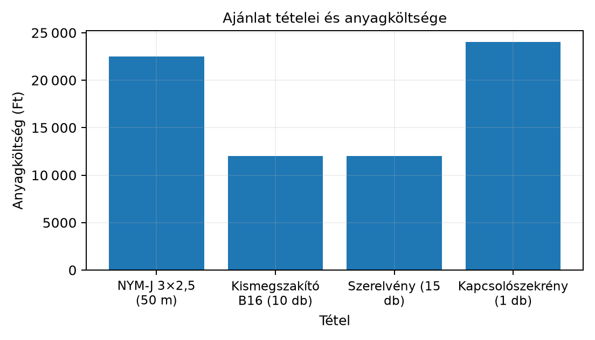

A villanyszerelő munka közben nemcsak vezetékeket köt és elosztókat szerel, hanem dokumentációt is készít. Az árajánlat, az anyaglista, a mérési jegyzőkönyv, az átadási dokumentáció mind a minőségi munka része. Ha ezeket kézzel, papíron számoljuk, könnyen elírunk egy szorzást, rosszul összegzünk, és a vevőnek átláthatatlan, javított lapot adunk át. Az irodai alkalmazások – elsősorban a táblázatkezelő és a szövegszerkesztő – arra valók, hogy a számolást megbízhatóvá, a dokumentumokat pedig rendezetté és újra felhasználhatóvá tegyék.
Ebben az alfejezetben megtanulod, hogyan készíts a táblázatkezelőben vezetékméretezési számítást és anyagköltség-listát, hogyan építs fel egy árajánlatot és egy jegyzőkönyv-sablont a szövegszerkesztőben, és hogyan kezeld a fájljaidat úgy, hogy azok később is megtalálhatók, módosíthatók és biztonságban legyenek.
Képzelj el egy anyaglistát, amelyben a mennyiség és az egységár oszlop mellett van egy tételösszeg oszlop. Ha a tételösszeget képlettel írjuk be, akkor a mennyiség vagy az egységár módosításakor az összeg automatikusan frissül. Ugyanezt a logikát alkalmazzuk a vezetékméretezésnél is: a táblázatban megadott áram, hossz és megengedett feszültségesés alapján a program kiszámolja a szükséges keresztmetszetet, mi pedig ellenőrizzük az eredményt.
Az alábbi diagram egy árajánlat tételeinek anyagköltségét szemlélteti oszlopdiagramon, ahogyan azt a táblázatkezelő a táblázat adataiból elkészítené:

A diagram célja, hogy a vevő azonnal lássa, melyik tétel viszi el a költség jelentős részét. A táblázatkezelő ezt néhány kattintással elkészíti a már bevitt adatokból.
Definíció. A táblázatkezelő program egy olyan alkalmazás, amely adatokat cellákba rendez, és a cellák tartalmát képletekkel, függvényekkel összekapcsolja. A munkalap oszlopai betűjelöléssel (A, B, C, …), sorai számozással (1, 2, 3, …) rendelkeznek. Egy cella hivatkozása az oszlopbetűből és a sorszámból áll, például a B2 cella a B oszlop 2. sorában van.
Definíció. A cellahivatkozás lehet relatív vagy
abszolút. A relatív hivatkozás (például B2) másoláskor a
célcellához képest eltolódik. Az abszolút hivatkozás (például
$B$2) másoláskor mindig ugyanarra a cellára mutat. A vegyes
hivatkozás (például $B2 vagy B$2) csak az
egyik irányban rögzít.
Szabály. A táblázatkezelőben minden képlet
egyenlőségjellel kezdődik (=). A képletben használhatunk
alapműveleteket (+, -, *,
/, ^), zárójeleket és beépített függvényeket,
például magyar nyelvű programban =SZUM(A1:A10), angol
nyelvűben =SUM(A1:A10). Magyar beállításnál a
függvényparamétereket pontosvessző választja el, a tizedesjel
vessző.
Összefüggés. A feszültségesésből számolt minimális keresztmetszet egyfázisú váltakozó áramú körben, ha a meddő feszültségesést elhanyagoljuk:
ahol a vezető minimális keresztmetszete, az áram, a vezeték hossza, a réz fajlagos vezetőképessége ( réz esetén; a gyakorlatban szokásos, kissé melegebb vezetőre kerekített érték, -on kb. 57–58 – ellenőrizendő: anyagminőségtől és hőmérséklettől függ), a megengedett feszültségesés. A táblázatban ezt a képletet cellahivatkozásokkal valósítjuk meg.
Egy világítási áramkört tervezünk. Az üzemi áram , a vezeték hossza , megengedett feszültségesés 3% (ellenőrizendő: MSZ HD 60364-5-52 tájékoztató értéke, tervezői előírás) a névleges -ból, tehát . Kiszámítjuk a minimális keresztmetszetet:
A szabványos keresztmetszetek közül a következő nagyobbat, -t választunk. A táblázatkezelőben ez a számítás így épül fel:
10306,956= (2 * A2 * B2) / (D2 * C2)Az E2 cella eredményül 1,552...-t ad. Ez a minimális
keresztmetszet. Ezután az F2 cellában egy segédtáblázatból (vagy
=HA(E2<=1,5;1,5;HA(E2<=2,5;2,5;...)) típusú
képlettel) kiválasztjuk a szabványos méretet. Figyelem.
Ez csak a feszültségesés-feltétel. A végleges keresztmetszethez a
terhelhetőségi feltételt
(
a szerelési mód szerint) és a védelem kioldási feltételét is ellenőrizni
kell – ezt a Terhelhetőség, melegedés és
javítótényezők és a Feszültségesés és a vezeték
méretezése alfejezet tárgyalja (a szerelési mód kiválasztását a Vezetékek és kábelek szerelési módjai alfejezet; a
kioldási feltételt a hibavédelmi fejezet); a táblázatba ezért érdemes
egy
-oszlopot
is felvenni (rövid, nagy áramú körnél a melegedés nagyobb
keresztmetszetet követelhet, mint a feszültségesés). A táblázatkezelőben
tehát nem csak egyszer, hanem több áramkörre is gyorsan elvégezhető a
számítás, ha a képletet lefelé másoljuk.
Az árajánlathoz olyan táblázatot készítünk, amely tartalmazza a tétel
megnevezését, a mennyiséget, az egységárat és a tételösszeget. A
tételösszeg képlete: =C2*D2, ha a C oszlop a mennyiség, a D
az egységár. Ezt a képletet lefelé másolva az összes tételnél
automatikusan megkapjuk az eredményt.
Az anyagköltség végösszegét =SZUM(E2:E20) függvénnyel
számoljuk. Ehhez hozzáadjuk a munkadíjat (E22) és a kiszállási költséget
(E23); ezek is áfaköteles tételek, ezért a nettó összesen
(E24: =SZUM(E21:E23)) a teljes áfaalap. Ha az
áfakulcs egy külön cellában van (például B22-ben 27%), akkor az áfa
összegét =E24*$B$22 képlettel számoljuk, a bruttó
végösszeget pedig =E24+E25 adja (az alanyi adómentes
vállalkozónál áfa nincs; ellenőrizendő: hatályos áfaszabályok). Például
46 500 Ft anyag és 40 000 Ft munkadíj esetén az áfa
Ft; ha csak az anyagra számolnánk, 12 555 Ft jönne ki, tehát 10 800 Ft
hiányozna. Ha az áfát tételenként is kiírjuk (=E2*$B$22,
lefelé másolva), a hivatkozásnak minden sorban ugyanarra a B22-re kell
mutatnia – ez az abszolút hivatkozás tipikus alkalmazása.
Példa. Egy anyaglista sora:
= 50 * 450 = 22 500 FtA táblázatkezelőben a tételösszeg cella képlete =C2*D2,
és az eredmény 22500 (vagy formázottan
22 500 Ft). A végösszeg a tételösszegek összege, majd a
munkadíjjal és az áfával növelve.
Definíció. A sablon olyan előre elkészített dokumentum, amely a céges arculatot, a fejlécet, a láblécet és a gyakran használt táblázatokat tartalmazza. A sablonból minden új ajánlat vagy jegyzőkönyv gyorsan, egységes formában készül el.
Szabály. A szövegszerkesztőben a fejléc és lábléc a dokumentum minden oldalán megjelenő terület. A fejlécbe általában a cég neve, címe, adószáma és a dokumentum típusa kerül, a láblécbe pedig az oldalszám és az elérhetőség.
Árajánlat-sablon felépítése:
Jegyzőkönyv-sablon felépítése:
A szövegszerkesztőben a táblázat eszközzel készíthetünk sorokat és
oszlopokat, a cellákat egyesíthetjük, a szegélyeket formázhatjuk. A
fejléc és lábléc a Beszúrás → Fejléc menüpontból érhető el
a legtöbb programban (a pontos elérés a program verziójától függ –
ellenőrizendő).
A dokumentumok akkor érnek valamit, ha később is megtalálhatók, megnyithatók és hitelesek maradnak. A szerelői gyakorlatban érdemes projektenként mappastruktúrát kialakítani:
Projekt_2025_Elosztocsere/
├── 01_Ajanlat/
├── 02_Meresi_jegyzokonyv/
├── 03_Rajzok/
├── 04_Fenykepek/
└── 05_Atadasi_dok/A fájlnevek legyenek beszédesek, tartalmazzák a projekt rövid nevét,
a dátumot és a verziót:
Elosztocsere_ajanlat_2025-03-15_v1.0.pdf. A verziószám
emelése (v1.0, v1.1, v2.0) segít nyomon követni, melyik az utolsó
jóváhagyott változat.
Szabály. A fontos dokumentumokból készíts legalább egy külső biztonsági másolatot, például felhőszolgáltatásba vagy külső merevlemezre. A felhőszolgáltatás beállításakor ellenőrizd a jogosultságokat, és ne tölts fel személyes ügyféladatokat jelszó nélkül védett mappába (ellenőrizendő: az adatvédelmi előírások pontos követelményei). A PDF exportálás megóvja a dokumentumot a véletlen módosítástól és a formátum elcsúszásától.
Továbbvitt eredmény. A fájlkezelés, a mappastruktúra, a mentési szabályok és az e-mailben való kommunikáció alapfogalmai a Számítógépes hálózatok és adatkommunikáció alfejezetben épülnek tovább: ott tanulod meg, hogyan oszthatók meg a fájlok hálózaton, mik azok a felhőszolgáltatások, és hogyan védhetők a hálózati kapcsolatok.
Lépéssor. Az alábbi lépések egy egyszerű árajánlat elkészítését mutatják:
Sorszám,
Megnevezés, Mennyiség,
Egységár (Ft), Tételösszeg (Ft).=C2*D2.=SZUM(E2:E20).=SZUM(E21:E23) az E24 cellában), az áfát pedig erre
számold: =E24*$B$22; a bruttó =E24+E25.Cél. Készíts saját, újra használható árajánlat- és jegyzőkönyv-sablont, amely tartalmazza a céges fejlécet, a tételes táblázatot és az összesítő képleteket.
Eszközök és anyagok. Számítógép, táblázatkezelő program (például LibreOffice Calc, Microsoft Excel vagy Google Sheets – a pontos lépések a programtól függenek), szövegszerkesztő (például LibreOffice Writer, Microsoft Word vagy Google Docs), minta adatok: egy kisebb lakáselosztó anyaglistája.
Biztonsági korlát. A gyakorlat irodai szoftverhasználat, nem villamos hálózati munkavégzés. A dokumentumokba csak olyan mérési és szerelési adatokat írj, amelyek valósak és ellenőrzöttek; a személyes ügyféladatok kezelésekor a hatályos adatvédelmi előírások szerint járj el (ellenőrizendő: aktuális adatvédelmi szabályzat).
A villamos munka során mindig a feszültségmentesítés öt szabályát alkalmazzuk; a jegyzőkönyvben szereplő mérési értékek dokumentálásakor is rögzíteni kell, hogy a mérés feszültségmentes állapotban vagy feszültség alatt, megfelelő jogosultsággal történt. Ezt a jegyzőkönyv megjegyzés rovatában tüntesd fel.
Számozott lépések:
Projekt_Vakolat_2025/01_Ajanlat,
02_Jegyzokonyv.Ajanlat_sablon_v1.0.docx,
Jegyzokonyv_sablon_v1.0.docx.Ellenőrzési pontok. A táblázatban a képletek automatikusan kiszámolódnak; ha módosítod a mennyiséget, a tételösszeg és a végösszeg frissül. A szövegszerkesztőben a fejléc minden oldalon megjelenik. A PDF-fájl nem tartalmaz szerkeszthető mezőket, és a formázás nem csúszik el.
Tipikus hibák. Ha a képlet másolásakor a hivatkozás rosszul tolódik el, az összeg hibás lesz; ha a munkadíjat a tételösszegbe kevered, a végösszeg nem egyezik a vevőnek adott számmal; ha a fájlnevekből hiányzik a verziószám, nem tudod, melyik az utolsó változat.
Dokumentálás. A kész fájlokat mentsd el, a PDF-verziót küldd el gyakorló e-mail-címre, és írd le egy jegyzetben, hogy melyik programmal és verzióval készült.
Rossz hivatkozástípus a képletben. Ha a
másolandó képletben abszolút hivatkozás kellene, de relatív marad, a
képlet másoláskor rossz cellákból olvas. Például az áfakulcs
$B$22 helyett B22 hivatkozással az összes
sorban különböző cellákra mutat. A helyes gyakorlat: az áfakulcsot
mindig abszolút hivatkozással, vagy nevesített cellával
használjuk.
Kézi számolás a táblázatkezelőben. A szerelő kiszámolja a tételösszeget, és beírja az eredményt képlet nélkül. Így a táblázat nem frissül, és később nehéz ellenőrizni a hibát. A helyes gyakorlat: mindig képlettel dolgozunk, a program végzi a számolást.
Elfelejtett mentés és biztonsági másolat. A szoftver összeomlása vagy áramszünet miatt elveszhet a dokumentum. A helyes gyakorlat: gyakori mentés, verziószámozás, és legalább egy külső biztonsági másolat.
Védetlen ügyféladatok e-mailben vagy felhőben. Az árajánlat személyes adatokat tartalmazhat; ha jelszó nélküli felhőbe töltöd, illetéktelenek is hozzáférhetnek. A helyes gyakorlat: jelszavas védelem, titkosított csatorna, és csak a szükséges adatokat küldd el (ellenőrizendő: a vonatkozó adatvédelmi szabályok).
=E2*B22?1. feladat (A). Magyarázd el saját szavakkal, mit jelent a relatív és az abszolút cellahivatkozás a táblázatkezelőben.
2. feladat (A). Számold ki a táblázatban egy tétel anyagköltségét, ha a mennyiség 12, az egységár 850 Ft. Írd le a cellahivatkozást, ha a mennyiség a C4, az egységár a D4 cellában van.
3. feladat (B). Vezetékméretezési táblázatot készítesz három áramkörre. Mindegyikhez adott: , ; , ; , . A megengedett feszültségesés mindenhol , réz vezetőképesség . Számold ki a minimális keresztmetszeteket, és válaszd ki a szabványos értékeket (, , , ).
4. feladat (B). Tervezd meg egy árajánlat-sablon felépítését a szövegszerkesztőben: sorold fel a fejléc elemeit, a táblázat oszlopait, az összesítés sorait és az aláírási blokk tartalmát. Írd le, hogyan számolnád a bruttó végösszeget a táblázatkezelőben, ha az áfa 27%.
5. feladat (C). Egy táblázatban a B oszlop a
mennyiség, a C az egységár, a D a tételösszeg. A D2 cella képlete
=B2*C2, és lefelé másolva a D5 cellában =B5*C3
jelenik meg. Mi lehet a hiba? Hogyan javítanád?
6. feladat (D). Gyakorlati feladat: hozz létre egy mappastruktúrát egy lakáselosztó-csere projekthez, adj neki beszédes mappaneveket, és tervezd meg a fájlneveket az árajánlathoz, a jegyzőkönyvhöz és a fényképekhez. Milyen verziózási szabályt alkalmazol? Hová mented a biztonsági másolatot?
1. feladat (A) megoldása. A relatív hivatkozás
másoláskor a célcellához képest eltolódik, például B2-ből
lefelé másolva B3 lesz. Az abszolút hivatkozás mindig
ugyanarra a cellára mutat, például $B$2. Vegyes esetben
csak az oszlop vagy csak a sor rögzített.
2. feladat (A) megoldása. Tételösszeg = mennyiség ×
egységár
.
A cellahivatkozással: =C4*D4.
3. feladat (B) megoldása. Az képletbe behelyettesítünk:
Mindhárom esetben a szabványos sor következő nagyobb eleme a feszültségesés szerint választandó keresztmetszet; ezt még a terhelhetőségi és kioldási feltétellel is ellenőrizni kell (Terhelhetőség, melegedés és javítótényezők, Feszültségesés és a vezeték méretezése; a szerelési mód: Vezetékek és kábelek szerelési módjai).
4. feladat (B) megoldása. Árajánlat-sablon fejléc:
cégnév, cím, adószám, telefonszám, e-mail, logó. Táblázat oszlopai:
sorszám, megnevezés, mennyiség, egységár, tételösszeg. Összesítés: nettó
anyagköltség (=SZUM(E2:E20)), munkadíj, nettó összesen
(E24: =SZUM(E21:E23), ahol E22 a munkadíj, E23 a
kiszállás), áfa (az egész nettó összegre: =E24*$B$22),
bruttó végösszeg (=E24+E25). Aláírás: keltezés, vállalkozó
aláírása, bélyegző. Az áfakulcs abszolút hivatkozással szerepel.
5. feladat (C) megoldása. A D5 cellában szereplő
=B5*C3 hibás, mert a C oszlop hivatkozása nem tolódott el
helyesen: a C3 cellára mutat C5 helyett. Ennek oka valószínűleg az, hogy
a D2 cella képletét nem normál módon másolták, hanem kézzel írták át,
vagy a másolás előtt a C oszlop hivatkozása vegyes vagy abszolút volt.
Javítás: a D5 cellába a helyes képlet =B5*C5, majd a teljes
oszlopot ellenőrizni kell, hogy minden sorban a megfelelő B és C
cellákra hivatkozzon.
6. feladat (D) megoldása. Mappastruktúra:
Projekt_Lakaselosztocsere_2025/
├── 01_Ajanlat/
├── 02_Meresi_jegyzokonyv/
├── 03_Fenykepek/
└── 04_Atadasi_dok/Fájlnevek:
Lakaselosztocsere_ajanlat_2025-03-15_v1.0.pdf,
Lakaselosztocsere_jegyzokonyv_2025-03-20_v1.0.pdf, a
fényképeknél IMG_20250315_101.jpg stb. Verziózási szabály:
a jóváhagyott változat v1.0, kisebb javítás
v1.1, nagyobb módosítás v2.0. Biztonsági
másolat: külső merevlemez vagy jelszóval védett felhőmappa, hetente
frissítve.
$B$2).=E2*$B$22.=C2*D2 →
.01_Ajanlat, 02_Rajzok,
03_Meresi_jegyzokonyv, 04_Fenykepek,
05_Atadasi_dok.Az irodai alkalmazások a szerelő számára nem felesleges
adminisztrációt, hanem a minőségi munka eszközét jelentik. A
táblázatkezelő lehetővé teszi, hogy a vezetékméretezés és az
anyagköltség-számítás képletekkel, automatikusan frissülő módon
történjen. A relatív hivatkozás másoláskor eltolódik, az abszolút
hivatkozás rögzített cellára mutat; ezt a különbséget minden
képletmásolásnál ellenőrizni kell. Az anyaglista tételösszege
=mennyiség*egységár, a végösszeg
=SZUM(tartomány), az áfa =végösszeg*áfakulcs
abszolút hivatkozással. A szövegszerkesztőben sablonok biztosítják, hogy
az árajánlat és a mérési jegyzőkönyv egységes, professzionális formában
készüljön; a fejléc, a táblázat és az aláírási blokk minden
dokumentumban azonos. A fájlokat beszédes névvel, verziószámmal és
projektenkénti mappastruktúrában kell menteni; a fontos dokumentumokból
PDF-export és külső biztonsági másolat készüljön. Az ügyféladatok
kezelésekor a jelszavas védelem és a titkosított csatorna
elengedhetetlen (ellenőrizendő: adatvédelmi előírások). A fájlkezelés, a
mentési rutin és az e-mail használat alapjai a Számítógépes hálózatok és adatkommunikáció
alfejezetben folytatódnak.